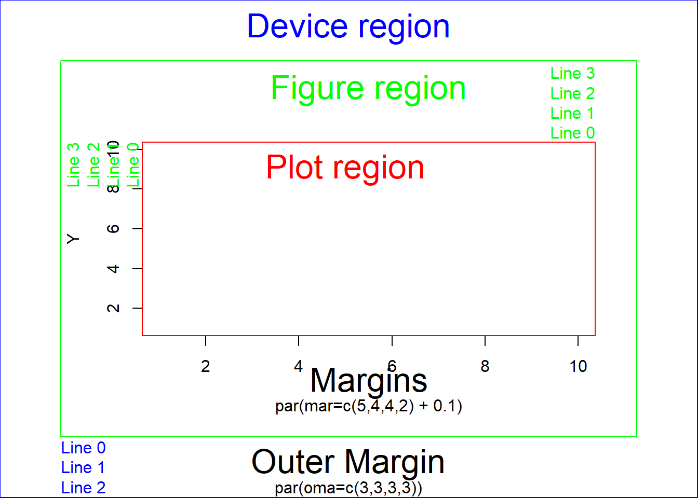

Chapter 8 Data handling
8.1 Atomic vectors
8.1.1 Basic operations
| Arithmetic | Comparison | Logical | |||
|---|---|---|---|---|---|
+ |
Addition | < |
less than | !x |
logical NOT |
- |
Subtraction | > |
greater than | x & y |
logical AND (vectorized) |
* |
Multiplication | <= |
less or equal | x && y |
logical AND (single value) |
/ |
Division | >= |
greater or equal | x | y |
logical OR (vectorized) |
^ |
Power of | == |
equal | x || y |
logical OR (single value) |
%% |
Modulo | != |
unequal | xor(x,y) |
logical exclusive OR |
%/% |
Integer division |
8.1.2 Factors
Also see chapter 2.4
levels()print or overwrite labels of factor levelsrelevel()The levels of a factor are re-ordered so that the level specified byrefis first and the others are moved down.reorder()Reorder the factor levels according to another variable
# Make level B the first level (reference value)
InsectSprays$spray <- relevel(InsectSprays$spray, ref = "B")
# Reorder levels of spray by median of count (first class should have lowest count median)
InsectSprays$spray <- reorder(InsectSprays$spray, InsectSprays$count, FUN = median)
boxplot(count ~ spray, data = InsectSprays)
forcats package
fct_reorder()Reorder the factor levels according to another variablefct_reorder2()Reorder the factors according to last value of x axisfct_inorder()Reorder factors levels by first appearance or frequencyfct_relevel()Set a certain level first or last (or at certain position)fct_infreq()Reorder levels by the frequency in which they appear in the data (highest frequency first)fct_rev()Reverse order of factor levelsfct_lump()Combine some factor levels to new factor level
8.1.3 Date Time
R has 3 formates to store Date-Time
POSIXctseconds since UNIX epoch 01.01.1970 00:00:00POSIXltlist with year, month, day, …DateString in form “YYYY-MM-DD”
Transform between string and Date-Time format
- From string to Date-Time
strptime()format()as.POSIXct()as.POSIXlt()as.Date()does not specify the time
- From Date-Time to string
strftime()
| Meaning | Meaning | ||
|---|---|---|---|
%Y |
Year (2004) | %y |
Year (04) |
%m |
Month (01-12) | %B |
Month (May) |
%d |
Day (01-31) | %H |
Hours (00-23) |
%M |
Minute (00-59) | %S |
Second (00-61) |
%j |
DOY (001-366) | %V |
WOY (00-53) |
All conversion specification can be found here
Functions
Sys.Date()get current DateSys.time()get current Date-Timeas.POSIXlt(x, tz = "America/Denver")change timezonedifftime()Time intervals / differencesweekdays()returns e.g. “Saturday”
lubridate package
8.1.4 Strings
| Function | Action |
|---|---|
nchar(x) |
Number of letters |
gsub('Peter', 'Pete', x) |
Replaces all Peter with Pete |
sub('Peter', 'Pete', x) |
Replaces first Peter with Pete |
grep('Pete', x) |
Which entry in a vector contain ‘Pete’ (returns rownumber) |
strsplit(x, '_') |
Splits strings at ’_’ and makes list out of them |
substr(x, 1, 1) |
Extract or replace substrings in a character vector (from start to stop, here: first letter) |
match() |
Returns a vector of the positions of (first) matches |
%in% |
Similar to match, returns a logical vector |
toupper(x) |
Makes all letters uppercase |
tolower(x) |
Makes all letters lowercase |
stringr package
8.2 Lists
split()split vector into list separated by factorunlist()unite list into one vector
8.2.1 Apply familiy
apply(x, c(1,2), FUN) # apply function on one or several dimension of array
# 1: row, 2: col, c(1,2) both, 3: third dim in array
lapply(x, FUN, …) # apply on list, return list
sapply(x, FUN) # apply on list, return simplified list (array, matrix, vector)
tapply(x, factor, FUN) # apply function separately for different factor levels
by(x, index, FUN, …) # x can be whole data.frame8.2.2 Long and wide format
reshape()
long <- Indometh #Data
wide <- reshape(Indometh, v.names = "conc", idvar = "Subject",
timevar = "time", direction = "wide")
long <- reshape(wide, v.names = "conc", idvar = "Subject",
timevar = "time", direction = "long")
head(long) Subject time conc
1.0.25 1 0.25 1.50
2.0.25 2 0.25 2.03
3.0.25 3 0.25 2.72
4.0.25 4 0.25 1.85
5.0.25 5 0.25 2.05
6.0.25 6 0.25 2.31 Subject conc.0.25 conc.0.5 conc.0.75 conc.1 conc.1.25 conc.2 conc.3 conc.4
1 1 1.50 0.94 0.78 0.48 0.37 0.19 0.12 0.11
12 2 2.03 1.63 0.71 0.70 0.64 0.36 0.32 0.20
23 3 2.72 1.49 1.16 0.80 0.80 0.39 0.22 0.12
34 4 1.85 1.39 1.02 0.89 0.59 0.40 0.16 0.11
45 5 2.05 1.04 0.81 0.39 0.30 0.23 0.13 0.11
56 6 2.31 1.44 1.03 0.84 0.64 0.42 0.24 0.17
conc.5 conc.6 conc.8
1 0.08 0.07 0.05
12 0.25 0.12 0.08
23 0.11 0.08 0.08
34 0.10 0.07 0.07
45 0.08 0.10 0.06
56 0.13 0.10 0.09dplyer version
pivot_longer()pivot_wider()
8.2.3 Aggregate
myData <- aggregate(# 1) Object to aggregate
mtcars$mpg,
# 2) Factors for bilding subgroups
by = list(cyl = mtcars$cyl, gears = mtcars$gear),
# 3) Functions of aggregation
FUN = function(x) c(mean = mean(x), sd = sd(x),
n = length(x)))
myData <- do.call(data.frame, myData) #reshape output to data frame
## Also possible to aggregate several variables at once
aggregate(cbind(var1, var2, var3) ~ grouping1 + grouping2,
data = x,
FUN = function(x) c(mean = mean(x), var = var(x), n = length(x)))8.2.4 SQL joins

# Inner join:
merge(x = df1, y = df2, by = "CustomerId")
# Outer join:
merge(x = df1, y = df2, by = "CustomerId", all = TRUE)
# Left outer:
merge(x = df1, y = df2, by = "CustomerId", all.x = TRUE)
# Right outer:
merge(x = df1, y = df2, by = "CustomerId", all.y = TRUE)
# Cross join:
merge(x = df1, y = df2, by = NULL)More explanations here